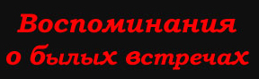
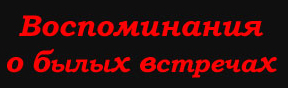

| < alt="" title="КИШ. Воспоминания о былых встречах. Новости" width=1 height=1> | ||||||
| Новости | Правдивые истории | Отчеты | Автографы и фото | |||
FROM: Lalena, Pantera
DATE: 27 ноября 2003
Начать можно с давки, которую устроили молодые фанаты группы перед входом в цирк.
| ||||
- Не, - поделилась я своим угнетенно сдавленным состоянием с друзьями, - пора заходить с черного входа, здоровье и возраст уже не позволяют мне выдерживать такие давки.
Менты помимо осмотра сумок заставляли всех раздеваться. Не совсем, конечно, а так, немного задирать куртки-дубленки.
Первое удивление вызвало отсутствие свободных мест на нашем ряду. Молодые панки в майках "Киша", сплошь разрисованные, заняли наши блатные места и ни под каким видом уходить не хотели. Ни каких точек давления мы найти не могли.
- Занимайте любые места, - доброжелательно посоветовали они нам, показывая руками огромное пространство цирка.
Разозлившись, я пошла к ближайшему менту в надежде получить поддержку от органов правопорядка. Орган отказался нам помочь.
- Да вы что! - кричала я. Мы же сейчас с ними подеремся!
- Так вы хотите стать инициатором драки? Пройдемте-ка!!!
Пришлось отмазываться еще и от мента. Мы обиделись и пошли вновь на штурм своих мест.
На этот раз панки были полояльнее. Они предложили вместе сидеть на наших местах. Все-таки вариант получше, нежели искать новые места нашего обитания. Усевшись на колени подростков, мы расслабились и с чувством выполненного долга ждали начала концерта.
Дабы загладить свое недостойное поведение перед панками, я угости весь ряд недавно купленным "Холсом", так как знала, петь будем много и громко, голосовые связки пригодятся.
Десятка курсантов, окружающих арену, в этот раз не было. Что удивило. Паша тоже не выходил. Пульт охраняли люди в форме.
Концерт начался. Это было нечто. В прямом смысле этого слова. У Яши порвалась струна. Ренегат выдернул ногами часть шнуров. Поручик уронил палочку. Техник группы - Мартын бегал среди музыкантов, не зная, кому первому помочь. При попытке воткнуть все штекера в свои места, он увидел, что у Поручика вдобавок ко всему сломалась какая-то педаль. Из гитар работал только Балу, поэтому проигрыш прошел на басах. Паша не туда нажал, и у Горшка вместо страшного загробного голоса получился что-то, больше похожее на пищащий визг.
На песни "Ты говоришь - я демон! " Слово "демон" многократным эхом пронеслось по залу. "Демон... демон... демон" - отражалось со всех сторон.
В этот день техник Олег ни на секунду не останавливался. Поломки и прочие недоразумения никак не прекращались. При распутывании провода, идущего от микрофона Горшка Мартын еще и нарвался на комплимент.
- Молодой человек, - произнес Горшок в микрофон, - я бы и сам справился.
Балу был уставший, грустный, практически в прострации. Яша не обращал ни на кого внимание. Паша был серьезным. Ренегат - сильно занятым. Машка - в косичках малазийских, по обобщенному мнению поклоников - Децл 2.
Да и поклонники в этот раз были на редкость активны. Практически весь цирк угорал, за исключением, может быть, пары-тройки каких-то тормозов.
К Горшку и Князю внезапно вышел парень в страшной маске скелета. Князь начал его душить приговаривая: "Скажи слово на "Р"!!!" Маска сопротивлялась, но ничего не говорила. На помощь Князю пришел Горшок. Парень что-то прорычал и убежал за кулисы. Потом мы узнали, что маска - это подстава. Это был тот же техник Мартын. Который забыл что говорить. Фраза-то была "Россия вперёд!"
Менты-охрана заставляла парней, махающих своими майками, одеваться. Хотя справа от Поручика пара девушек прыгала от счастья, выставляя на всеобщее обозрение свои бюстгальтеры. Но им замечание никто не сделал.
К концу концерта народ находился в состоянии экстаза. Не смотря на звук (по словам Мартына - очень тихо), постоянные поломки, дебильную охрану, праздник удался. Но вот и финальная песня - Проклятый старый дом. Горшок сказал всем "До свидания", и группа ушла за кулисы.
Мы же подошли к Паше. Паша странно улыбался. У технического персонала были хитрые лица, да и хихикали они подозрительно как-то. Прислушавшись к разговору, мы поняли, что идет обсуждение прошедшего концерта, вернее всех поломок и проколов, которые на нем случились. И Паша даже не спросил, как нам понравился звук... Хотя мы ничего необычного не заметили. Колбасились по полной, все время рядомстоящие в оба уха голосили, мы тоже не особо молчали. Может поэтому и не заметили.
Паша, взяв в руки непонятные нам устройства, ушел за кулисы. Мы остались стоять возле Пашиной установки, наблюдая сбор всевозможных проводов. Ожидание затянулось, мы уже почти отчаялись, собрались пойти за кулисы, но к большой нашей радости мы увидели идущих в нашу сторону Балу, Поручика и Пашу.
Балу был в странной бандане. Поручик пришел с виски в одной руку и с пивом в другой. Пиво досталось нам. Поручик спросил, как мы тут поживаем, как дела, что нового, как Кемерово, но ни слова в ответ мы так и не смогли сказать. Задав кучу вопросов, Саша убежал за кулисы.
Дабы показать свою эрудированность, я спросила у Балу о саундтреке, который группа пишет к фильму "Американец". Балу почему то начал мне рассказывать о Джонни Депе, о фильмах, в которых тот снимался (Плакса, Людоед). Может быть я и узнала бы, как с этим связана группа "Король и Шут", но подошедший Поручик отвлек мое внимание от Балу.Поручик курил, рассказывая Паше подробности поломки педали. В это время из выхода (куда недавно ушли все поклонники и фаны) раздался женский голос.
- Поручик!
Я, не секунды не колеблясь, ответил:
Это не Поручик!
- Саша!
- Это не Саша!
- Щиголев Саша! - не унималась девушка.
- Это не я! - сказал Поручик.
:)
Балу сидел в это время в сторонке и грустно улыбался.
- Прикинь, Балу, а тебя то поклонники то не узнают. Бывает же.
Балу на это ничего не ответил, но, посмотрев, с каким энтузиазмом мы допивали пиво, предложил еще одну бутылку и с очень грустным видом начал рассказывать Насте о вступлении в анти....-ое общество, что-то связанное с козами.
Пиво "Стела Артуа" мы допивали уже на остановке, полностью забитой фанатами, обсуждающими прошедший концерт.
- Да, - рассуждали мы с Настей, - знали бы они, что мы сейчас пьем пиво, которое нам Балу задарил, нам бы, наверное, не поздоровилось :))
| Новости | Правдивые истории | Отчеты | Автографы и фото | |||
Лучше 800 х 600 |